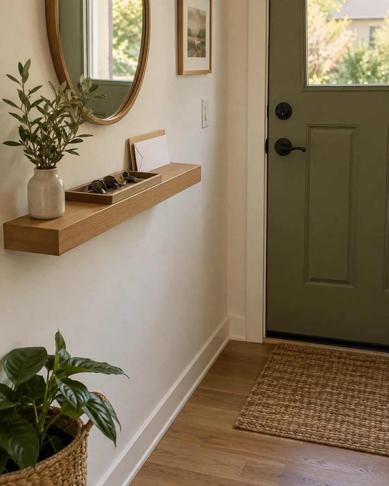

01
GIVE SMALL ITEMS A HOME
Create a landing spot for keys
Keys and sunglasses need a place you can reach with one hand. A narrow wall shelf or an existing corner of a console works better than a deep table that invites piles. Keep a small tray for pocket items, and leave room to set down the day's mail briefly.
- Start with a tray you already own
- Mount a ledge only where it will not interrupt the door swing
- Keep the surface for daily items, not long-term storage
IF YOU NEED TO SHOP
What to look for
A shallow shelf with secure mounting and enough depth for a small tray.
See option on Amazon →As an Amazon Associate I earn from qualifying purchases.